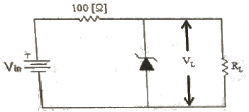
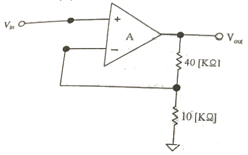
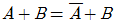
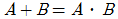
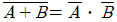
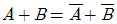
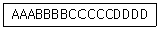
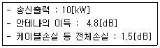
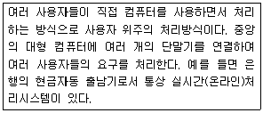
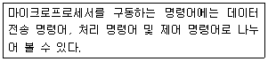

방송통신기사 (2017-03-05 기출문제)
1과목: 디지털 전자회로
1. 전원 주파수 60[Hz]을 사용하는 정류회로에서 120[Hz]의 맥동 주파수를 나타내는 정류방식은?
- 단상 반파 전류
- 단상 전파 전류
- 3상 반파 정류
- 3상 전파 정류
(정답률: 62%)

2. 다음 과 같은 정정압 회로에서 입력전압 Vin이 15[V]~18[V]의 범위로 변동하는 경우 제너다이오드 전류 ID의 변화는 얼마인가?(다, RL=1[KΩ], VL=10[V]이다.)

- 20~50[mA]
- 30~60[mA]
- 40~60[mA]
- 40~70[mA]
(정답률: 54%)
3. 다음 중 공통 이미터(CE) 증폭기회로에 대한 설명으로 옳은 것은?
- 출력신호는 입력신호와 위상이 같다.
- 출력신호는 입력신호와 위상이 다르다.
- 출력신호는 입력손호에 비해 작다.
- 출력신호는 입력신호와 크기가 같다.
(정답률: 53%)
4. 그림과 같은 부궤환 증폭기의 페루프(Closed-Loop) 차단주파수는? (단, 개루프(Open Loop)일 때, 디득-대역폭 곱음 1×106[Hz]이다.)

- 200[kHz]
- 100[kHz]
- 50[kHz]
- 10[kHz]
(정답률: 45%)
5. 다음 중 차동증폭기의 동상신호제거비(Common-Mode Rejection Ratio)에 대한 설명으로 틀린 것은?
- 동상신호제거비가 작을수록 간섭신호 제거 특성이 좋다.
- 개루프 전압이득이 100,000이고 공통-모드 이득이 0.2인 연산증폭기의 공통신호제거비는 500,000이다.
- 동상신호제거비는 동상신호를 제거할 수 있는 성능척도이다.
- 입력 동상신호에 대한 오차를 나타내는 성능척도이다.
(정답률: 51%)
6. 다음 중 푸시 풀(Push-Pull)증폭기에서 출력파형이 찌그러짐이 작아지는 이유는?
- 기수고조파가 상쇄되기 때문이다.
- 우수고조파가 상쇄되기 때문이다.
- 기수차 및 우수차 고조파가 상쇄되기 때문이다.
- 직류성분이 없어지기 때문이다.
(정답률: 53%)
7. 발진회로에서 발진을 지속하기 위해 필요한 과정은?
- 출력신호의 일부분을 부퀘환시킨다.
- 출력신호의 일부분을 정퀘환시킨다.
- 외부로부터 지속적으로 전원과 입력신호를 제공한다.
- L과 C성분을 제거한다.
(정답률: 65%)
8. 하틀리 발진회로에서 커패시텉스 C=200[pF], 인덕턴스 L1=180[μH], L2=20[μH] 및 상호인덕턴스 M=90[μH]의 값을 가질 때 발진주파수는 약 얼마인가?
- 517[kHz]
- 537[kHz]
- 557[kHz]
- 577[kHz]
(정답률: 56%)
9. 다음 중 주파수변조(FM)에서 신호대 잡음비(S/N)를 개선하기 위한 방법으로 틀린 것은?
- 디엠파시스(De-Emphasis) 회로를 사용한다.
- 잡음지수가 낮은 부품을 사용한다.
- 변조지수를 크게 한다.
- 증폭도를 크게 높인다.
(정답률: 50%)
10. 다음 중 FM에 대한 특징으로 틀린 것은?
- 단파 대역에 적당하지 않다.
- 수신의 충실도를 향상시킬 수 있다.
- 잡음을 보다 감소시킬 수 있다.
- 피변조파의 점유주파수대역이 좁아진다.
(정답률: 57%)
11. QAM 변조방식은 디지털 신호의 전송 효율향상, 대역폭의 효율적 이용, 낮은 에러율, 복조의 용이성을 위해 어떤 변조 방식을 결합한 것인가?
- FSK+PSK
- ASK+PSK
- ASK+FSK
- QPSK+FSK
(정답률: 63%)
12. 전보 전송에서 800[Baud]의 변조 속도롤 4상 차분 위상 변조된 데이터 신호 속도는 얼마인가?
- 600[bps]
- 1,200[bps]
- 1,600[bps]
- 3,200[bps]
(정답률: 51%)
13. 다음 중 높은 주파수 성분에 공진하기 때문에 생기는 펄스 상승부부느이 진동 정도를 무엇이라 하는가?
- 새그(Sag)
- 링깅(Ringing)
- 언더슈트(Undershoot)
- 오버슈트(Overshoot)
(정답률: 65%)
14. 멀티바이브레이터의 단안정, 무안정, 쌍안정의 동작은 어떻게 결정 되는가?
- 전원 전압의 크기
- 바이어스 전압의 크기
- 전원 전류의 크기
- 결합 회로의 구성
(정답률: 62%)
15. 숫자 0에서 9까지를 나타내기 위해 CBT 코드는 몇 비트가 필요한가?
- 4
- 3
- 2
- 1
(정답률: 57%)
16. 다음 중 드모르간(De Morgan)의 정리를 옳게 나타낸 것은?




(정답률: 66%)
17. 다음 중 Master-Slave 플립플롭은 어떤 현상을 해결하기 위해 사용되는가?
- Race 현상
- Toggle 현상
- 펄스 지연 현상
- 반전 현상
(정답률: 61%)
18. 다음 중 동기식 카운터와 비동기식 카운터를 설명한 것으로 옳은 것은?
- 동기식 카운터를 직렬형, 비동기식 카운터를 병렬형 카운터라고도 한다.
- 같은 수의 플립플롭을 갖는 경우 비동기식 카운터보다 동기식 카운터가 더 높은 입력 주파수를 사용하는 곳에 이용된다.
- 비동기식 카운터는 동기식 카운터와는 달리 시간 지연이 누적되지 않는다.
- 비동기식 카운터는 동기식 카운터보다 더 많은 회로 소자가 필요하다.
(정답률: 42%)
19. 다음 중 디코더(Decoder)에 대한 설명으로 틀린 것은?
- 출력보다 많은 입력을 갖고 있다.
- 한번에 하나의 동작을 수행한다.
- N 비트의 2진 코드 입력에 의해 최대 2N 개의 출력이 나온다.
- 인코더(Encoder)의 역기능을 수행한다.
(정답률: 65%)
20. 다음 중 전기산기(Full Adder)의 구성으로 옳은 것은?
- 1개의 반가산기위 1개의 OR 게이트
- 1개의 반가산기위 1개의 AND 게이트
- 2개의 반가산기위 1개의 OR 게이트
- 2개의 반가산기위 1개의 AND 게이트
(정답률: 66%)
2과목: 방송통신 기기
21. 텔레비전 방송 제작 중 연주소에서 하는 역할로 틀린 것은?
- 프로그램 제작
- 제작된 프로그램을 송신소로 송출
- 제작된 프로그램을 방송위성국으로 송출
- 제작된 프로그램을 일반 수신자에게 송출
(정답률: 82%)
22. 다음 중 방송국의 부조정실 기기 구성품이 아닌 것은?
- 편집기
- 자동송출장비
- CCU, VCR, CG
- 파형측정기, 믹서
(정답률: 73%)
23. 다음 중 통신위성을 이용한 텔레비전 뉴스 취재 시스템은 어느 것인가?
- ENG(Electronic News Gathering)
- SNG(Satellite News Gathering)
- FPU(Field Pickup Unit)
- STL(Studio Transmitter Link)
(정답률: 70%)
24. 유선방송 전송설비 중 분기기의 설명으로 맞는 것은?
- 입력신호 에너지를 2 이상으로 균등하게 분배하는 장치
- 입력신호 에너지를 간선에서 지선으로 불균등하게 분리시키는 장치
- 신호의 전송손실을 보상하기 위하여 사용되는 장치
- 이상 전류 또는 이상 전압의 유입을 제한하거나 차단하는 장치
(정답률: 85%)
25. 라디오 송신 안테나의 근처에서 강한 전파로 인하여 다른 방송의 수신이 방해를 받게 되는 지역을 무엇이라고 하는가?
- 페이딩(Pading) 지역
- 블랭킷(Blanket) 지역
- 리전(Region) 지역
- 오버랩(Overlap) 지역
(정답률: 79%)
26. 지상파 디지털 멀티미디어방송(T-DMB) 전송방식 중 서로 직교하는 다수의 반송파를 이용하여 디지털 전송을 행하는 다수 반송파의 변조방식은?
- QAM
- PSK
- ASK
- OFDM
(정답률: 63%)
27. TV신호의 수평주사선수가 1,⑤0 인 화면의 종횡비가 9:16일 때, 최고 주파수는? (단, 프레임 주파수는 30[Hz/초])
- 4.5[MHz]
- 19.5[MHz]
- 5.5[MHz]
- 29.4[MHz]
(정답률: 71%)
28. 전송신호가 111111111 일 때 여기에 PN(Pseudo Noise) 신호 100101010을 가하면 출력 신호 값은?
- 11111111
- 100101010
- 011010101
- 100101011
(정답률: 78%)
29. 비디오 스위처의 기능 중 영상을 전환하는 기능과 관계가 없는 것은?
- 디졸브(Dissolive)
- 훼이드 인(Fade in)
- 컷(Cut)
- 프리뷰(Preview)
(정답률: 82%)
30. 다음 중 지상파 방송과 비교한 위성방송의 장점이 아닌 것은?
- 넓은 주파수 대역을 통해 대용량의 정보를 전송할 수 있다.
- 단일 방송파로 넓은 지역에 서비스를 제공할 수 있다.
- 방송 시스템의 초기 구축 비용이 저렴하다.
- 비상 재해시 방송망 확보가 가능하다.
(정답률: 82%)
31. 다음 중 위성통신의 특성에 대한 설명으로 옳지 않은 것은?
- 통신가능 범위가 타 통신방식에 비하여 넓다.
- 안정한 대용량의 통신이 가능하다.
- 유연한 회선 설정이 불가능하다.
- 광역서비스가 가능하다.
(정답률: 83%)
32. CATV에서 입력신호 에너지를 간선에서 지선으로 불균등하게 불리 시키는 장치는?
- 증폭기
- 분배기
- 분기기
- 보호기
(정답률: 82%)
33. 다음 중 동축케이블에 대한 광섬유 케이블의 특징으로 적절하지 않ㅅ는 것은?
- 좁은 대역폭을 가지고 있다.
- 작은 크기와 적은 무게를 가지고 있다.
- 적은 감쇠도(Attenuation)를 가지고 있다.
- 전자기적 잡음에 강하여 도청이 어렵다.
(정답률: 80%)
34. 인터넷 방송을 위한 가입자의 인증, 보호 및 콘텐츠의 저작권 보호를 위한 기술이 아닌 것은?
- 워터마킹(Watermarking)
- DRM(Digital Right Management)
- CAS(Conditional Access System)
- UI(User Interface)
(정답률: 82%)
35. IPTV의 STB(Settop Box)는 4개의 계층(Layer)으로 구성되는 이와 관련이 없는 것은?
- 콘텐츠 계층-EPG, 홈 네트워크, VoIP
- 어플리케이션 계층-양방향 및 부가 서비스 구현
- 미들웨어 계층-ASAP, MHP 등 방송 어플리케이션 개발환경
- 하드웨어 계층-CPU, RAM 등 STB구성 하드웨어
(정답률: 58%)
36. 송신기의 기준 신호 레벨 Es=1[Vms]이고, 잡음레벨 En=0.01[Vms]와 같을 때 AM Moise Ratio는 얼마인가?
- -10[dB]
- -20[dB]
- -30[dB]
- -40[dB]
(정답률: 63%)
37. TV 송신 시스템 시험용 장비의 신호별 기준 특성 임피던스가 틀린 것은?
- 고주파 신호 : 50[Ω]
- VIDEO 신호 : 75[Ω]
- AUDIO 신호 :“ 600[Ω]
- Transport Stream 신호 : 50[Ω]
(정답률: 75%)
38. 다음 중 음향의 성질에 대한 설명으로 알맞은 것은?
- 소리의 크기, 소리의 높이, 음색, 지속 시간의 4가지 속성을 사용
- 소리의 크기는 주로 주파수에 의해 결정된다.
- 수리의 음색은 주로 음압 레벨에 의존한다.
- 소리의 높이는 주로 스펙트럼 파형에 의해 결정된다.
(정답률: 75%)
39. 방송용 송신기에서 증폭기의 입력 전력이 3[mW], 출력 전력이 3[W]일 때 전력 이득은?
- 60[dB]
- 40[dB]
- 30[dB]
- 10[dB]
(정답률: 75%)
40. 다음 중 스펙트럼 분석기(Spectrum Analyzer) 용도로 부적합한 것은?
- 신호의 주파수, 레벨, 주파수 대역폭 측정
- 잡음 전력 및 S/N, C/N 측정
- 스퓨리어스(불요방사) 측적
- 멀티버스트 주파수 특성 측정
(정답률: 48%)
3과목: 방송미디어 공학
41. 다음 중 유럽 디지털 TV의 변조방식은 무엇인가?
- COFDM
- VSB
- 8-VSB
- QAM
(정답률: 64%)
42. 우리나라 DTV 표준 방식인 ATSC(Advanced Television Systems Committee)에 대한 설명으로 옳지 않은 것은?
- Carrier는 Multi-Carrier이다.
- 전송방식은 8-VSB이다.
- 압축방식은 영상은 MPEG-2, 음향은 Dolby AC-3이다.
- MPEG-2 TS를 사용한다.
(정답률: 82%)
43. 음향신호에서 2[V]와 10[V]의 레벨[dB]차는 약 얼마인가?
- 8[dB]
- 14[dB]
- 18[dB]
- 22[dB]
(정답률: 79%)
44. 다음 중 VU미터에 대한 설명으로 틀린 것은?
- 소리의 주파수 특성을 측정하는 장치이다.
- 귀로는 분석할 수 없는 정확한 음량을 평균적 감각으로 보고 조절할 수 있도록 해주는 장치이다.
- 일반적으로 바늘이 우측의 빨간선을 넘어서는 경우 게인(gain)을 조절하도록 하는 것이다.
- 0을 중심으로 하여 빨간선에 바늘이 들어서면 입력되는 소리가 지나친 상태라고 본다.
(정답률: 65%)
45. 소리의 세기 레벨이 80[dB]인 음원이 두 개 있을 때, 레벨의 합으로 가장 적절한 것은?
- 40[dB]
- 80[dB]
- 83[dB]
- 160[dB]
(정답률: 83%)
46. 디지털방송에 사용되는 HDTV의 디지털 변환에 1,125/60 방식과 1,250/50 방식이 있다. 이 두 방식의 공통 파라메타는 ITU-R 709에 의해서 규정하고 있다. 이 두 방식의 색차신호(Cr,Cb) 표본화주파수는?
- 37.115[MHz]
- 37.125[MHz]
- 74.115[MHz]
- 74.25[MHz]
(정답률: 71%)
47. 카메라 렌즈의 구경이 3[cm], 초점거리가 4.2[cm]일 때 f-stop은 얼마인가?
- 1.3
- 1.4
- 1.5
- 1.6
(정답률: 78%)
48. 방송용 카메라의 화상 장애 현상 중 렌즈 앞에 부착된 후드(Hood)나 필터(Filter)의 크기가 부적당하여 사용렌즈의 화각에 걸리거나 화상이 전체적으로 또는 모서리 부부니 어두워지는 현상을 지칭하는 용어로 가장 적절한 것은?
- 플레어(Flare)
- 색수차
- 비네팅(Vignetting)
- 구면수차
(정답률: 82%)
49. 비디오 로케에서 실내의 라이팅을 할 때 인공 광원을 사용할 것인지 아닌지의 조건에 해당하지 않는 것은?
- 촬영을 위한 최대한의 밝기가 있는가?
- 피사체의 휘도 콘트라스트가 적당한가?
- 양호한 색재현이 가능한가?
- 영상 표현을 위한 보조 광원이 필요한 가?
(정답률: 65%)
50. 다음 중 오디오 믹싱의 유의할 점과 가장 거리가 먼 것은?
- 주 음향이 부 음향에 묻히지 않도록 유의한다.
- 효과음은 주 음성 레벨보다 너무 크지 않도록 유의한다.
- 용도에 적합한 마이크를 선택하여야 한다.
- 두 개 이상의 음원을 믹싱할 때 마스킹 효과는 신경 쓸 필요가 없다.
(정답률: 87%)
51. 다음의 디지털 TV 서비스 중 프로그램 명, 시간, 줄거리, 시청제한표시 등의 방송프로그램과 관련된 정보를 제공하는 것은 무엇인가?
- EPG
- PVR
- VOD
- SMS
(정답률: 71%)
52. 국내 IPTV에서 사용되고 있는 동영상 압축 기술 표준은 무엇인가?
- MPEG-2
- H.261
- H.263
- H.264
(정답률: 79%)
53. 0.0002[dyne/cm2]의 압력이 고막에 전달될 때의 음압레벨이 0[dB SPL]이다. 다음 중 일상 대화 수준의 음압에 가까운 [dB SPL] 값은 어느 것인가?
- 140[dB SPL]
- 100[dB SPL]
- 60[dB SPL]
- 20[dB SPL]
(정답률: 71%)
54. 다음의 문자열을 무손실 압축했을 경우, 가능합 압축률은 얼마인가?

- 1/2
- 1/3
- 1/4
- 1/5
(정답률: 84%)
55. 반사음이 전형 없는 자유음장에서 음원으로 부터의 거리가 두배가 되는 지점에서의 음압은 얼마나 낮아질까?
- 3[dB]
- 6[dB]
- 9[dB]
- 12[dB]
(정답률: 71%)
56. 유선방송의 데이터방송 기술표준은?
- ACAP(Advanced Common Application Platform)
- GEM(Globally Executable MHP)
- OCAP(OpenCAble Application Platform)
- MHP(Multimedia Home Platform)
(정답률: 70%)
57. 하나의 반송파를 두가지 이상의 음성으로 변조 방송하고, 그것을 수신측에서 분리 재생할 수 있게 하는 방송방식은?
- 변조방송
- 음성다중방송
- 스테레오방송
- 음성분리방송
(정답률: 72%)
58. 우리나라 디지털 TV방송의 오디오 압축방식인 Dolby AC-3에 대한 설명으로 잘못된 것은?
- 5.1 포맷은 기존의 스테레오 채널(Left, Right)에 6개의 채널이 추가로 구성된 것인다.
- 5개의 메인채널과 주로 저음 영역을 담당하는 LFE(Low Frequency Effects)채널, 이렇게 6개로 구성된다.
- 메인채널의 주파수 재생영역은 3[Hz]~20[kHz]로, LFE cosjfdms 3[Hz]~120[Hz]로 주파수 영역이 제한된 채널이다.
- 5.1에서 “5”는 5개 메인채널을 뜻하고, “1”은 LFE를 뜻하며 메인채널 주파수의 1/10을 재생한다.
(정답률: 79%)
59. 디지털 신호 처리에서 원신호와 샘플링 주파수와의 관계로 가장 적절한 것은?(단, fs : 샘플링주파수, fmax : 원신호의 최대주파수)
- fs = fmax
- fs ≥ 2fmax
- fs < 2fmax
- fs = 3fmax
(정답률: 86%)
60. MPEG 영상 데이터의 계층을 낮은 층부터 올바르게 연결한 것은?
- Block - Macroblock - Slice - Picture
- Macroblock - Block - Slice - Picture
- Slice - Macroblock - Block - Picture
- Slice - Block - Macroblock - Picture
(정답률: 80%)
4과목: 방송통신 시스템
61. 10[kHz] 대역에서 16QAM 변조방식을 사용하여 전송할 수 있는 데이터의 최대 전송속도는?
- 10[kbps]
- 20[kbps]
- 40[kbps]
- 80[kbps]
(정답률: 72%)
62. 다음 전송방식 중 전송로에 직류차당 특성이 있어도 파형 변형이 거의 생기지 않는 방식은?
- 폴라 NRZ
- 유니폴라 RZ
- 폴라 RZ
- 바이폴라 RZ
(정답률: 65%)
63. 526.5[kHz] ~ 1,606.5[kHz]대의 중파방송(AM)은 총 몇개의 채널을 할당할 수 있는가?
- 80개
- 120개
- 54개
- 36개
(정답률: 82%)
64. 다음 라디오 방송용 전용회선 중 스테레오 가능한 회선은?
- 라디오 방송용 1호규격
- 라디오 방송용 4호규격
- 전화급 2호규격
- 광대역 회선
(정답률: 67%)
65. 다음 중 음향콘솔에 관한 특징으로 옳지 않은 것은?
- 콘솔모듈은 입력모듈(모노, 스테레오), 마스터 모듈, 모니터 모듈로 구성되어 있다.
- VU메터는 600옴 부하로 1[mW](0.775V)를 입력했을 때 0VU레벨을 표시한다.
- Phase Meter는 신호의 위상을 체크한다.
- 위상메터에서 나타나는 리사쥬 패턴에서 신호의 입력이 두신호의 레벨은 같고 위상이 역상이면 원으로 나타난다.
(정답률: 65%)
66. 다음 중 FM 수신기 보조회로가 아닌 것은?
- 진폭제한자
- 디엠퍼시스회로
- 스켈치 회로
- IDC회로
(정답률: 66%)
67. 다음 보기의 조건에 따른 실효복사전력은 몇 [dBk]인가?

- 6.7
- 12.5
- 13.3
- 15
(정답률: 62%)
68. 안테나의 이득을 절대이득(dBi)과 상대이득(dBd)으로 구분해 볼 수 있는데, 이중 상대이득이 5.5[dBd]인 경우 절대 이득은 몇 [dBi]인가?
- 7.65[dBi]
- 8.55[dBi]
- 9.15[dBi]
- 11.22[dBi]
(정답률: 66%)
69. 다음 중 TV 수신기 구성요소가 아닌 것은?
- 수신 안테나 튜너회로
- 영상 중간주파 증폭부
- 프리엠파시스
- 동기 및 편향신호
(정답률: 67%)
70. 다음 중 CATV 전송로에서 사용되는 증폭기가 아닌 것은?
- 간선증폭기
- U/V증폭기
- 분기증폭기
- 분배증폭기
(정답률: 78%)
71. CATV 동축케이블 내의 전자파 속도는?(단, εr=2.3(비투자율), μr=1(비유전율), ε≒8.855×10-12[F/m], μ0=4π×10-7[H/m]_
- 약 1.5×108[m/s]
- 약 2.0×108[m/s]
- 약 2.5×108[m/s]
- 약 3.0×108[m/s]
(정답률: 70%)
72. 다음 중 CATV 방송의 전송망 설계 및 설치에 대한 설명으로 옳지 않은 것은?
- 낙뢰에 대비한 설계를 고려한다.
- 장비의 유지보수 및 호환성을 고려한다.
- 풍압 및 풍설해에 대응한 설계를 고려한다.
- 동축케이블의 손실은 설계 시 고려하지 않는다.
(정답률: 81%)
73. 정지궤도 위성은 적도 상공의 약 몇 [km] 떨어진 곳에서 원 궤도를 지구자전 주기와 동일하게 회전하는 위성인가?
- 10,000[km]
- 26,000[km]
- 36,000[km]
- 46,000[km]
(정답률: 79%)
74. 다음 중 통신위성의 개발, 발사, 운용 및 관리 등을 수행하는 국제통신 위성기구는?
- INSAT
- INTELSAT
- WESTER
- ISO
(정답률: 78%)
75. 다음 중 위성에서 송신하는 전파를 이용하여 지구 전체를 측위할 수 있는 시스템으로 위성을 이용하여 자동차나 항공기 또는 선박과 같은 이동물체의 속도를 측정할 수 있는 것은?
- GPS
- VSAT
- ENG
- STL
(정답률: 84%)
76. 다음 중 유럽의 지상파 디지털 TV 전송방식은?
- NTSC
- ATSC
- ISDB-T
- DVB-T
(정답률: 75%)
77. 지상파 DMB에서 활용하는 부가서비스의 일종으로, 실시간 교통정보를 가공하고 관련 데이터를 진송하는 규격에 해당하는 것은?
- BIFS(Binary Format For Scene)
- ETI(Ensemble Transport Interface)
- TPEG(Transport Protocol Experts Group)
- PAD(Program Associated Data)
(정답률: 76%)
78. 다음 중 방송국 송신설비의 급전선으로서의 요건으로 해당되지 않는 것은?
- 손실이 될수록 적을 것
- 정비 점검이 용이할 것
- 급전선의 정수(定數)가 최대치로 변할 것
- 건설비 비용이 적을 것
(정답률: 72%)
79. 44.1[kHz]로 샘플링한 CD의 경우 이론적으로 재생할 수 있는 최대주파수는?
- 10.⑤[kHz]
- 16.25[kHz]
- 22.⑤[kHz]
- 26.25[kHz]
(정답률: 75%)
80. 다음 중 M/W(Microwave) 안테나회선의 송신기출력(Pt)이 10[dBm]이고, 송신안테나의 이득(Gt)은 30[db], 수신안테나의 이득(Gr)은 5[dB], 자유공간 손실[L]은 5[dB]일 때, 수신안테나의 이득(Gr)을 계산한 것으로 옳은 것은?
- 40[dB]
- 30[dB]
- 20[dB]
- 10[dB]
(정답률: 64%)
5과목: 전자계산기 일반 및 방송설비기준
81. 다음 중 누산기(Accumulator)에 대한 설명으로 옳은 것은?
- 연산장치에 있는 레지스터의 하나로서 연산 결과를 기억하는 장치이다.
- 기억장치 주변에 있는 회로인데 가감승제 계산 논리 연산을 행하는 장치이다.
- 일정한 입력 숫자들을 더하여 구 누계를 항상 보존하는 장치이다.
- 정밀 계산을 위해 특별히 만들어 두어 유효 숫자 갯수를 늘리기 위한 것이다.
(정답률: 67%)
82. 다음 중 병렬 입출력 방식(Perallel Input Output)에 대한 설명이 아닌 것은?
- 입ㆍ출력 제어장치와 입ㆍ출력 장치 사이에 데이터를 1~수 바이트(byte)씩 병렬로 전송하는 방식이다.
- 고속 데이터 전송에 적합하다.
- 단거리 전송에 이용된다.
- 데이터의 각 byte의 시작과 끝을 인식하도록 시작과 정지 비트를 사용한다.
(정답률: 54%)
83. 8비트로 된 레지스터에서 첫째 비트는 부호비트로 0, 1로 양, 음을 나타낸다고 할 때 2의 보수(2's Complement)로 숫자를 표시한다면 이 레지스터로 표현할 수 있는 10진수의 범위로 올바른 것은?
- -256 ~ +256
- -128 ~ +127
- -128 ~ +128
- -256 ~ +127
(정답률: 74%)
84. 두 이진수 01101101 과 11100110 을 연산하여 결과가 10011011 이 나왔다면 다음은 어떤 연산을 한 것인가?
- AND 연산
- OR 연산
- XOR 연산
- NAND 연산
(정답률: 53%)
85. 다음 지문에서 설명하는 운영체제의 유형은?

- 시분할 시스템(Time-Sharing System)
- 다중 처리(Multi-Processing)
- 대화 처리(Interactive Processing)
- 분산 시스템(Distributed System)
(정답률: 64%)
86. 다음 중 운영체제에 대한 특징으로 틀린 것은?
- 유닉스(Unix) : 네트워크 기능이 강력하며, 다중 사용자의 지원이 가능하고, PC에서도 설치 및 운용이 가능한 버전이 있다.
- 리눅스(Linux) : 무료로 다운받아 모든 분야에 물료로 널리 사용할 수 있으며, 윈도우즈와 동일한 환경을 제공한다.
- 윈도우즈(Windows) : 소스가 공개도어 있지 않으며, 많은 사용자들이 보편적으로 사용하고 있다. 서버급 보다는 클라이언트 용으로 주소 사용되고 있다.
- 도스(DOS) : 명령어 입력방식으로 불편하며, DOS지원을 위해 메모리와 디스크의 용량에 한계가 있다. 여러 사람이 작업을 할 수 없다.
(정답률: 74%)
87. 다음 중 C 언어의 특징으로 틀린 것은?
- C언어자체는 입ㆍ출력 기능이 없다.
- C언어는 포인터의 주소를 계산할 수 있다.
- C언어는 연산자가 풍부하지 못하다.
- 데이터에는 반드시 형(type) 선언을 해야 한다.
(정답률: 74%)
88. 다음 중 시스템 소프트웨어에 대한 설명으로 틀린 것은?
- 시스템 소프트웨어와 응용 소프트웨어로 구별할 수 있다.
- 시스템 소프트웨어는 관리, 지원, 개발 등으로 분류할 수 있다.
- 스프레드시트, 데이터베이스 등은 대표적인 시스템 소프트웨어이다.
- 운영체제는 대표적인 시스템 소프트웨어이다.
(정답률: 67%)
89. 다음 중 마이크로컴퓨터에서 주소(Address) 설계 시 고려사항이 아닌 것은?
- 주소와 기억공간을 독립한다.
- 가상기억방식만 채택한다.
- 번지는 효율적으로 표현한다.
- 사용하기 편해야 한다.
(정답률: 79%)
90. 다음 중 지문에 있는 명령어와 종류가 다른 것은?

- Move
- Store
- Push
- Add
(정답률: 61%)
91. 다음 중 방송의 공적책임에 해당되는 것은?
- 방송은 인간의 존엄과 가치 및 민주적 기본질서를 존중하여야 한다.
- 방송에 의한 보도는 공정하고 객관적이어야 한다.
- 방송편성의 자유와 독립은 보장된다.
- 방송은 국민의 알권리와 표현의 자유를 보호ㆍ신장하여야 한다.
(정답률: 60%)
92. 미래창조과학부장관 또는 방송통신위원회의 방송국 추천, 허가, 승인 등록시 심사하여 공포하여야 하는 사항이 아닌 것은?
- 제정 및 기술적 능력
- 방송발전을 위한 지원계획
- 지역적, 사회적, 문화적 필요성과 타당성
- 광고 프로그램 내용의 적절성
(정답률: 63%)
93. 공동체 라디오 방송사업자가 될 수 있는 기관 또는 단체는?
- 대한민국정부
- 종교단체
- 지방자치단체
- 비영리단체
(정답률: 81%)
94. 중계유선방송사업 및 음악유선방송사업의 결격사유와 관련없는 것은?
- 중계유선방송사업 및 음악유선방송사업의 허가 또는 등록이 취소된 후 5년이 경과되지 아니한 자
- 미성년자 또는 한정치산자
- 파산선고를 받은 자로서 복권되지 아니한 자
- 외국인 또는 외국의 정부나 단체
(정답률: 65%)
95. 다음 중 전송망사업의 등록은 등록신청서에 사업계획서 및 시설설치 계획서를 첨부하여 누구에게 제출을 하는가?
- 문화체육관광부장관
- 미래창조과학부장관
- 고용노동부장관
- 방송통신위원회
(정답률: 65%)
96. 지상파 방송사업 또는 위성방송 사업을 하고자 하는 자는 누구에게 방송국 허가를 받아야 하는가?
- 대통령
- 방송통신위원회
- 문화체육관광부장관
- 방송통신심의위원회
(정답률: 71%)
97. 다음 중 종합유선방송 헤드엔드 설비의 주요 기능이 아닌 것은?
- 네트워크 신호 공급
- 변ㆍ복조 기능
- 신호 분리, 혼합 기능
- 편집 기능
(정답률: 73%)
98. 종합유선방송의 구내전송선로설비에서 사용되는 분배기, 분기기, 직렬단자, 보호기의 반사손실은 몇 [dB] 이상이어야 하는가?
- 가. 5[dB] 이상
- 10[dB] 이상
- 15[dB] 이상
- 20[dB] 이상
(정답률: 52%)
99. CATV시스템의 구성에 단말계에 속하지 않는 것은?
- 가입자 컨버터
- 정합기
- 보안기
- 선로 증폭기
(정답률: 45%)
100. 공사를 설계한 용역업자는 그가 작성 또는 제공한 실시 설계도서를 당해 공사가 준공된 후 보관기간은?
- 3년
- 4년
- 5년
- 6년
(정답률: 74%)